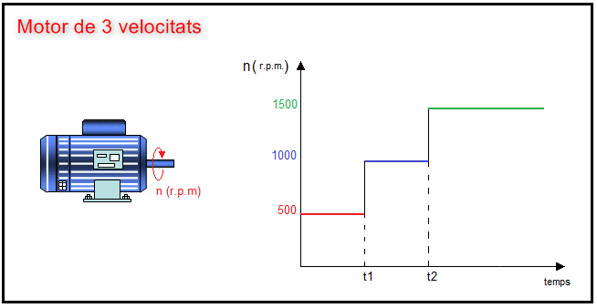

Recordem que els bobinats de l'estator i del rotor d'un motor asíncron han de tenir sempre el mateix nombre de pols. Per tant, la variació de la velocitat d'un motor d'inducció per canvi en el nombre de pols, exigeix modificar al mateix temps el nombre de pols en el bobinat de l'estator i en el bobinat del rotor.
Un gran avantatge que tenen els rotors de gàbia d'esquirol front els rotors bobinats és que en aquests rotors es reprodueix sempre de manera automàtica el nombre de pols del camp magnètic que es crea en l'estator del motor i per tant, la commutació en el nombre de pols s'ha de fer únicament en l'estator del motor. En canvi, en un motor amb rotor bobinat s'hauria de implementat algún sistema per commutar al mateix temps el nombre de pols en l'estator i en el rotor. La dificultat de implementar un disseny d'aquest tipus en el motors d'inducción amb rotor bobinat ha fet que aquest sistema de variació de velocitat tan sols s'aplique als motor d'inducció amb rotor de gàbia d'esquirol.
| El sistema de variació de velocitat per canvi en el nombre de pols tan sols s'utilitza en els motors d'inducció amb rotor de gàbia d'esquirol. |
Hi ha tres maneres de variar el nombre de pols d'un motor asíncron amb rotor de gabia d'esquirol:
- Bobinats independents amb diferent nombre de pols situats en l'estator del motor
- Un únic bobinat amb commutació de pols (motor Dahlander)
- Una combinació dels dos mètodes anteriors
En tots aquests casos, la regulació de velocitat sempre serà discreta, ja que el nombre de parells de pols p només pot adoptar valors sencers i, en conseqüència, no es pot variar la velocitat del motor de forma contínua (veure imatge).
